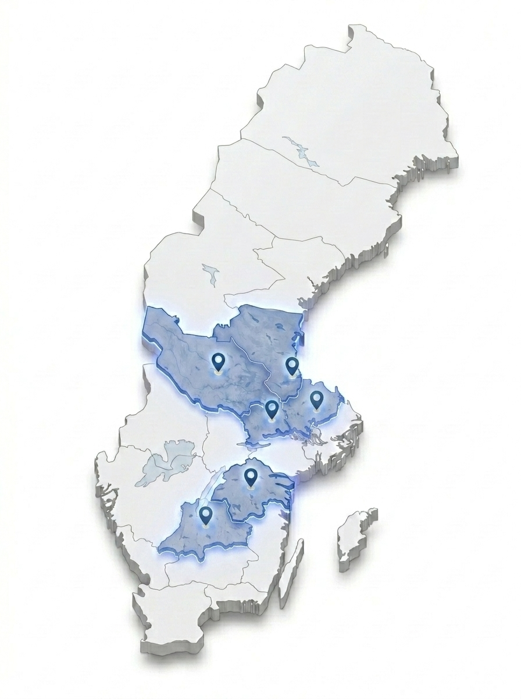

Digitalt i hela landet, tekniker på plats i fem regioner.
Webbitar bygger, driftar och optimerar hemsidor och annonser för företag i hela Sverige. När hårdvara, nätverk eller kontorsteknik strular har vi dessutom tekniker redo på plats.
Där vi är verksamma
Från Borlänge och Falun i norr till Linköping och Jönköping i söder. Klicka och läs mer om våra lokala närvaroområden.

Isometrisk översikt över markerade regioner med tekniker på plats och fullständig digital räckvidd över hela landet.
Dalarna
Vår hemmabas. Snabb utryckning och rådgivning vid kontorsstrul, byte av nätverksutrustning, felsökning av datorer, Wi-Fi och skrivare.
Gästrikland
Lokal teknikerassistans för kontor, butiker och industriföretag. Praktisk hjälp vid IT-problem, nätverksinstallationer och hårdvarubyten.
Västerås & Västmanland
Fysisk IT-konsulting och löpande teknisk support för små och medelstora företag. Snabba inställelsetider i hela Mälardalen.
Linköping & Östergötland
On-site teknikerresurs för kontorsmiljöer, hårdvarukonfiguration, stabilt Wi-Fi och skrivarlösningar i teknikintensiva Östergötland.
Jönköping & Småland
Lokal på-plats teknikerhjälp i Jönköpingsregionen. Felsökning av kontors-IT, installation och underhåll av nätverk, datorer och skrivare.
Hela Sverige & Globalt
Alla våra webbtjänster, hostingpaket, SEO-optimeringar och betalda annonskampanjer levereras smidigt på distans till företag i hela landet.
Vad vi gör på plats kontra digitalt
Ett enda nummer och en och samma kontaktperson oavsett om problemet sitter i koden eller i en trasig nätverkskabel.
På plats på ert kontor
För företag i Dalarna, Gästrikland, Västerås, Linköping och Jönköping rycker vi ut praktiskt när tekniken krånglar.
- Datorer & Arbetsplatser: Felsökning, nyinstallation och optimering av PC och Mac.
- Nätverk & Wi-Fi: Konfiguration av routrar, switchar, accesspunkter och felsökning av täckning.
- Skrivare & Utrustning: Installation och koppling av nätverksskrivare och scanners.
- Hårdvarubyten: Byte av diskar, minnen, strömförsörjning och kringutrustning.
Digitalt över hela landet
Webbproduktion, synlighet och drift sköts med högsta precision och snabb återkoppling oavsett var du befinner dig.
- Hemsidor & Webbdesign: Skräddarsydd design och snabb, modern webbutveckling.
- Hosting & Drift: Blixtsnabb molnhosting, SSL, daglig säkerhetskopiering och uppdateringar.
- SEO & Google Företagsprofil: Lokal och nationell sökmotoroptimering med tydlig månadsrapportering.
- Betald Annonsering: Konverterande kampanjer på Google, Meta, Pinterest och X.
Varför ha allt samlat hos Webbitar?
En kontakt för allt
Du slipper ringa en byrå för hemsidan, en annan för annonserna och en tredje när kontorets Wi-Fi krånglar. Vi tar helhetsansvaret.
Snabba inställelsetider
Med lokala tekniker i Dalarna, Gästrikland, Västerås, Linköping och Jönköping kan vi rycka ut snabbt när det verkligen brinner i knutarna.
Tydliga & fasta villkor
Inga dolda kostnader eller krångliga konsultavtal. Du vet alltid vad du betalar för och vad du får.
Behöver ditt kontor hjälp med tekniken eller en ny hemsida?
Berätta vad du behöver så återkommer vi med ett rakt svar och ett tydligt prisförslag.